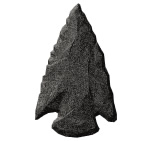

TURNERING
För att låsa upp de mer avancerade banorna i spelet och få köra nya bilar, måste du först tävla och vinna turneringen för varje epok. Det finns tre epoker och var och en har tre banor som du måste tävla på:
Öknen Djungeln Glaciären Den stora muren Kreta Giza Medeltiden Vikingabyn Atlantis
För att vinna i Turnering måste du klara två saker:
|  | ||
|
1. Sluta loppet som 1:a (eller minst 3:a om du har inställningen Lätt) 2. Samla alla 8 pilspetsarna. |
||
Spelar du Turnering, har du tre försök per epok. Förlorar du en tävling kan du försöka igen, så länge du har några försök kvar.